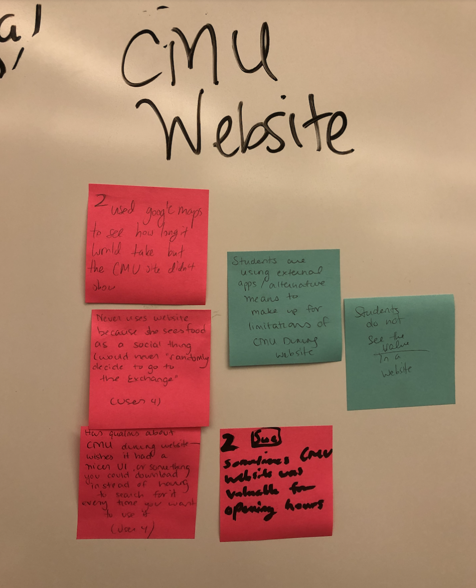
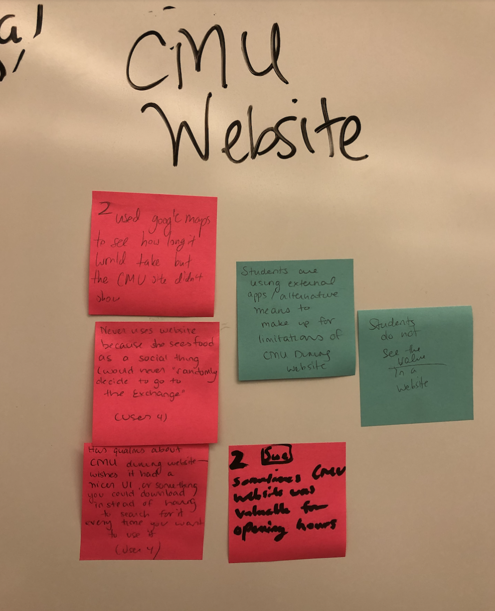
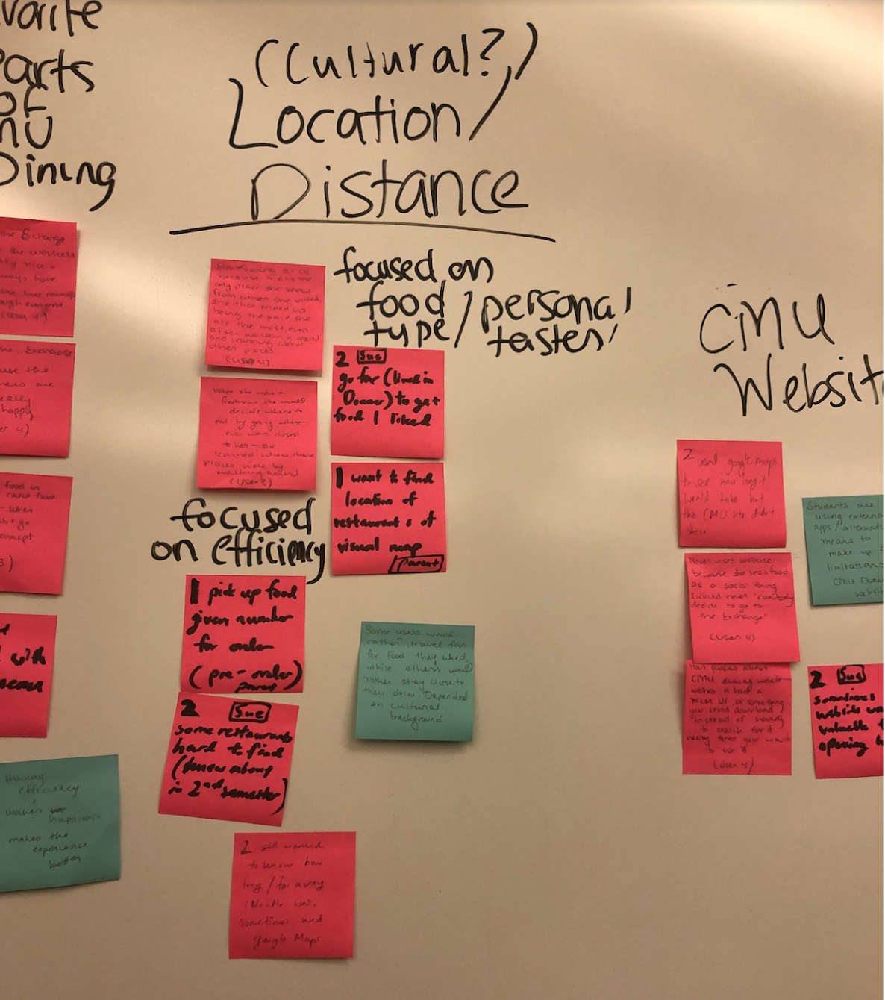

EatNow: An efficiency solution for Carnegie Mellon’s Dining Services
Figma Workbook Pitch Slides Research Process Book Prototyping & User Testing Process Book
As a part of our Interaction Design Studio class, our group was tasked with identifying a problem in CMU Dining services that could be solved with a responsive web application. The first phase of the project involved conducting research to identify a problem, and the second phase involved designing the responsive interfaces to address the user needs identified in the first phase.Design Research for a Responsive Web Application
Focus Setting
We were interested in gathering information on how the CMU dining website affects efficiency for those using campus dining services. This covers a range of topics, from data showcasing wait times in lines to visual maps for discovering the geographic locations of all of the different dining options. To narrow our focus, we conducted user research to reach a better understanding of potential problems in the existing systen. Click here to view the interview protocol and documentation for the domain research interviews.
Research Insights Summary
One of the insights we found is that lines are inefficient, especially right after classes; this particularly occurs at places like ABP and La Prima. Going off of this, the workers at ABP tend to be understaffed, further aggravating the long lines and leading to grumpy staff. We also found some insights into the positives of CMU dining; namely, there are specific foods that people at CMU gravitate towards, such as the pound cake at ABP and the curry at iNoodle. We could find ways to accentuate these positives. Generally, however, food from off-campus tended to be considered higher-quality, so we could find a way to get this higher-quality food to become a more integrated part of the CMU dining experience.
Additionally, we found there was general student dissatisfaction with the current CMU website for dining regarding the design. Students addressed the discomfort they experienced with the website lacking information such as the distance from their current location to get to the desired restaurant and how long it would take. On the other hand, the current CMU website did contain relevant information like specialty menus of the day and opening/closing hours that students did find relevant. However, students preferred external apps like Google Maps that were downloadable and had nicer UI, in comparison to the online website format. Students wanted to see an improvement in converting the design into an application format with the additional information they found necessary such as the distance of the desired restaurant from their current location to be incorporated into the design.
Opportunities for Informational Impact
From our findings and insights, we identified two key areas where information could positively impact the dining experience. To begin, displaying information with respect to wait times could improve the long lines at locations like La Prima. Additionally, displaying geographic information could help new students or visitors unfamiliar with campus get a sense of nearby dining options.
Reframing
Based on our insights, we decided to focus on how wait time information and geographic information can be integrated into a user-friendly format to help both students and visitors manage their time more efficiently.
Affinity Diagram
 



In the pictured affinity diagram, we distinguish findings as pink and insights as blue. I reproduced them here for ease of reading. Note that findings are unbolded and insights are bolded.
Personas
Anjali Patel is a junior in CIT. She is a pre-med double major on a competitive dance team, so her life is quite hectic and her spare time is limited. During the weekdays, she spends most of her time in the Sorrells library studying in between classes or at dance rehearsal. She loves her competitive dance group because many of her closest friends are there, but she does wish to spend a little bit more time with them. Although she doesn’t grab much campus food, she does get her daily caffeine boost at La Prima or ABP in between classes. Anjali wishes that the lines at food places on campus were shorter so that when it doesn’t take over 20 minutes just to grab a single sip of coffee. It’s especially frustrating for her when she has a lot of work to do. At the moment, she usually eats alone and studies at the same time to efficiently manage her time. She likes to eat healthy foods, and especially loves eating salad bowls. If campus dining places that serve salad bowls like ABP weren’t so crowded all the time, she fantasizes how efficient it would be for her to eat and study at the same time when she is on campus. Currently, she meal preps in her off-campus apartment, and carries her lunch to campus every day.
Ends Goal: Anjali wishes to be able to grab food from campus more efficiently, grab and go style.
Personal Goal: Anjali wants to find a better balance between work and life, so she can spend some time with her friends instead of just studying and dancing all day.
Life Goal: Anjali wants to get a 4.0 and become the best engineer-doctor there ever was.
Chakril Shinawatra is a freshman in SCS and an international student from Thailand. He anticipated that the move from Thailand to America would be difficult for him. However, part of the smooth transition was how diverse the food of CMU is. Specifically, his favorite dish, curry is available at a location closest to his current dorm Donner House. The first week he moved to CMU, he made many close friends on his floor, many of whom are also computer science majors. His closest group of three friends are currently taking 15-112 the beginner’s programming class for Computer Science majors. They have a tradition of meeting at the UC to grab lunch together and order pizza which they can buy on their meal plan for a late-night snack while they code together at the study area in Donner House. Other than his 3 closest friends, he recently became a board member of the Business Technology Group on campus as a data engineer. He is excited to lead a small group in creating different data analytics projects which will allow him to gain leadership experience, meet more people, and work on projects that are relevant to his field of interest of computer science.
Ends Goal: Chakrii sees food as a social thing and wishes to spend time eating with his friends on campus in between classes.
Personal Goal: In his spare time, Chakrii likes to spend time with his friends. He hopes to become an executive member in his coding club and make many personal connections through his extracurricular activities during his time at CMU.
Life Goal: He wants to become a software engineer at Google.
Frank Darling is a parent of Melinda, a sophomore in CFA. Frank is very close to Melinda whom he deeply cares about. They call at least once a week and share about their daily life. Frank is very pleased to know that she has made many close friends because as a design major they all take the same classes, pull all-nighters together to finish their assignments and eat lunch together. Frank currently runs a small tech start-up and loves how he works with young computer engineers just out of college. Because these young programmers are busy coding all day, for lunch, he usually eats sandwiches his wife packs for him. Everyday he gets a different type of sandwich - sometimes tuna, sometimes cheese, and sometimes egg. Because Melinda knows how much Frank likes his sandwiches, Frank has been to both ABP and the Exchange. During her lunch breaks, Melinda asked Frank to meet her on campus. Frank tried using GoogleMaps to find these food places but didn’t succeed and had to ask around random CMU students walking around. For both of his visits to the ABP and the Exchange, he recounts how displeased he was because they ended up waiting in line for 20 minutes just for their sandwich.
Ends Goal: Frank hopes to be able to visualize where food places are located within campus and hopefully more efficiently navigate his way on campus.
Personal Goal: Frank hopes his personal business that he runs continues to do well as it does as the present. In his spare time, Frank loves traveling with his family and looking at maps to understand the geographic location of new places he visits. Frank hopes to visit Pittsburgh at least every semester to see his daughter Melinda.
Life Goal: Frank hopes to maintain a happy marriage with his wife, Melinda, and to make sure his daughter Melinda has the best experience at CMU.
Scenarios
Anjali is studying at Sorrells library. She’s stressed out for her Biomedical Engineering final tomorrow, and she knows she’ll need a caffeine boost to hold her over for the next few hours. However, she’s wary of diverting too much time away from her textbook while waiting in the historically long lines at La Prima. She checks the website and finds that the wait time is 15 minutes, but it should go down to 2 minutes if she waits a little longer. In this time, Anjali is able to read a chapter of her textbook. Once the wait goes down, Anjali enters the line for La Prima, and she only has to wait 2 minutes for her coffee. She gets the caffeine boost she needed without having to waste time waiting in line, and aces her final the next morning.
Every Monday, Wednesday, and Fridays, Chakril and his three closest friends who study Computer Science together meet at the University Center (UC) at exactly 12pm to eat their lunch then go to the introductory programming class that starts at 1pm. This one time Chakrii came 10 minutes late because he had to go back to his dorm to get the homework assignment he had printed that was due at 1pm. When he got to the first floor of the UC where they usually meet, his five friends were all waiting for him. All the tables in the University Center were filled and the restaurants had long lines waiting in front of them. His friends were getting worried that they might be late to class because they have an assignment due at 1pm. Feeling sorry, Chakrii checks the website and sees that a restaurant called iNoodle has no wait right now and is even located very close to their classroom. Chakrii’s friends agree to eat at iNoodle. After having a delicious lunch, they safely arrive at 12:50pm, 10 minutes before class starts and are able to submit their homework assignment to their professor in time.
Frank is on campus to surprise his daughter, Sarah, during her first weekend at college because she is really homesick. He gets tickets to her favorite play, but is running late. He also hasn’t eaten anything all day! He has never eaten on campus before and doesn’t know where to go to get something quick before heading to the play with Sarah. He looks on the website and finds that Rothberg’s Roasters is the closest eating location from him and currently has a short wait time. He texts his daughter to come meet him. Sarah is so surprised and happy to see her dad and even more excited to go to the play. By the time she gets there, the food is ready to eat. They quickly finish their food and are able to make it to the play on time. She feels a lot better and confident she can get through her next week of classes.
Storyboards
Designing, Prototyping, and Testing the Responsive Web Site
From our research insights, we discovered that many students found many aspects of CMU Dining Services to be inefficient. Students and non-students alike had complaints about long wait times, and visitors and new faces to campus revealed that the process of finding where various locations are is incredibly time-consuming. Our responsive website addresses the needs of these interests by introducing the ability to evaluate the wait times and easily navigate to the locations of the various eateries on campus, thus leading to a less stressful and more enjoyable dining experience.
Initial Wirefame Sketches
User Testing
We conducted some initial user testing using the above screens. The click-through prototype can be accessed here and the protocol and a detailed findings summary can be viewed here.
The flow seemed to make sense to our classmates. However, they pointed out some navigational problems that came about when they tried to go through the screens. For instance, we realized we were missing buttons that help users get from one screen to another. There was no “back” button if you accidentally pressed something. There was no “home” button or logo for users to press to get back to the home page. When users press into a dining location, they only get one option to press, which is the map function. Our peers suggested that we could broaden those options to include menus or ratings, even though the main feature of our app was efficiency and we wanted to highlight a map.
Design Iteration #2
Using the feedback we received, we iterated on our designs. We added more icons when users press into a dining location and also added the average wait time near the top of the screen. Since we want to highlight efficiency, we thought it would be better if users could explicitly see the average wait time instead of having to look at the map. We also added color to a few of the pages with a pink and green color scheme, with some yellow, and adapted the design for web.
We later made a further revision to the desktop dining location screen by bringing the icons down and centering them to better utilize the screen space. It also looks less cluttered with everything centered.
Final Screens
Using the results of our think-aloud testing, we came up with modifications to the prototypes and used these modifications to develop our final screens. The final click-through prototype is linked here. Pictured are the final screens for our mobile designs, followed by the final screens of our desktop designs.
Reflections
Starting from our black and white designs, we were able to visualize important components that would be included in our prototype. When we conducted the user testings using these prototypes, a lot of our users complimented the simplicity and ease with which they could sort the restaurants by distance or wait time, so we knew to keep this simplicity a key focus in successive iterations. On the other hand, the research also shed valuable insight into some of the shortcomings of our design. Some of the buttons and sorting functionalities were not as intuitive to users as we had expected when we had participants realize certain user stories. We made sure to take their feedback into account while designing what evolved into our final screens. In addition, one user pointed out that our map had an unnecessary screen. We consolidated our map functionality to two map slides, one for showing the map with a visualization for how to get to the desired restaurant, and the other showing the written directions. Overall, we found that testing with users and seeing them perform certain tasks was incredibly helpful in determining what works and is intuitive for users, as well as what doesn’t.
All in all, through many iterations of the website, we came up with a final product that incorporated helpful feedback from user testing and our own understanding of the design principles. Throughout our design process, we kept in mind ways to enhance our final goal of aiding the efficiency with which users will be able to get food on-campus. Through this project, we learned about how to consider the viewpoint of our users and visualize our ideas into a final product that reflects the users’ needs.
Special thanks to Kate Zhao and Min Sue Lee for being wonderful partners to work with!